PARTE 3 · AULAS 39–43
Integrais triplas e mudança de variáveis
As integrais triplas estendem a ideia das integrais duplas para funções de três variáveis definidas sobre regiões sólidas. Nesta seção, construiremos a integral tripla a partir de somas de Riemann, estudaremos o Teorema de Fubini, aprenderemos a descrever regiões sólidas e calcularemos volumes. Em seguida, veremos como coordenadas cilíndricas e esféricas podem simplificar sólidos com simetria e como o Jacobiano aparece nas mudanças de variáveis.
1. Da integral dupla para a integral tripla
Considere uma função \(f(x,y,z)\) definida em uma caixa retangular
Dividimos os três intervalos em subintervalos. Essa partição divide \(B\) em pequenas subcaixas \(B_{ijk}\), cada uma com volume
Escolhendo um ponto de amostragem \((x_i^*,y_j^*,z_k^*)\) em cada subcaixa, construímos a soma tripla de Riemann
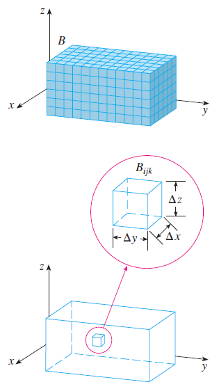
2. Definição da integral tripla
A integral tripla de \(f\) sobre a caixa \(B\) é definida como o limite das somas triplas de Riemann:
Quando \(f\) é contínua em \(B\), essa integral existe. A notação \(dV\) representa um elemento infinitesimal de volume.
3. Teorema de Fubini para integrais triplas
O Teorema de Fubini permite transformar uma integral tripla sobre uma caixa em integrais simples sucessivas.
A integral mais interna é calculada primeiro. Na expressão anterior, integramos inicialmente em relação a \(x\), mantendo \(y\) e \(z\) fixos; depois em relação a \(y\); e, finalmente, em relação a \(z\).
Existem seis ordens possíveis:
Quando a região é uma caixa retangular e \(f\) é contínua, qualquer dessas ordens produz o mesmo resultado.
4. Exemplo 1 — integral tripla sobre uma caixa
Calcule
onde
Escolhendo a ordem \(dx\,dy\,dz\),
Primeiro,
Logo,
5. Integrais triplas sobre regiões gerais
Na prática, a região de integração raramente é uma caixa. Para um sólido \(E\), escrevemos
A estratégia central consiste em descrever geometricamente o sólido por meio de uma projeção em um dos planos coordenados e determinar os limites da variável correspondente à integral interna.
6. Regiões sólidas do tipo I
Uma região sólida \(E\) é do tipo I quando está compreendida entre duas superfícies que podem ser escritas como funções de \(x\) e \(y\):
A região \(D\) é a projeção de \(E\) sobre o plano \(xy\). Para cada ponto \((x,y)\in D\), percorremos verticalmente o sólido desde a superfície
até a superfície
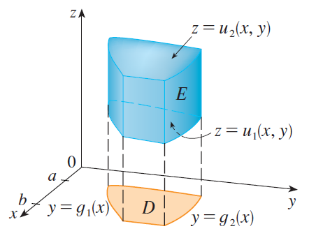
Consequentemente,
7. Quando a projeção também precisa ser descrita
Se a projeção \(D\) no plano \(xy\) é uma região do tipo I,
então o sólido pode ser escrito como
e
Se \(D\) for do tipo II,
podemos escrever
8. Exemplo 2 — tetraedro
Considere o tetraedro limitado pelos planos
O plano superior pode ser escrito como
A projeção sobre o plano \(xy\) é o triângulo
Portanto,
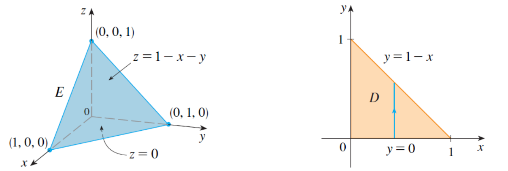
Por exemplo,
Integrando sucessivamente,
9. Regiões sólidas dos tipos II e III
Também podemos escolher outras direções para percorrer o sólido.
Uma região do tipo II possui projeção \(D\) no plano \(yz\) e é descrita por
Nesse caso,
Uma região do tipo III possui projeção \(D\) no plano \(xz\):
e
10. Cálculo de volumes
O volume de um sólido \(E\) é obtido integrando a função constante \(1\):
Portanto, calcular o volume é um caso particular de integral tripla. O principal trabalho consiste em descrever corretamente a geometria do sólido e seus limites de integração.
11. Coordenadas cilíndricas
As coordenadas cilíndricas estendem as coordenadas polares para o espaço. Um ponto \(P\) é representado por
onde \(r\) e \(\theta\) são as coordenadas polares da projeção de \(P\) no plano \(xy\), enquanto \(z\) permanece igual à coordenada cartesiana.
No sentido inverso,
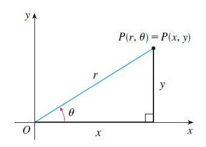
12. Superfícies simples em coordenadas cilíndricas
O cilindro circular
torna-se simplesmente
Da mesma forma,
descreve a parte superior de um cone circular.
13. Elemento de volume em coordenadas cilíndricas
Como a mudança ocorre no plano \(xy\), o elemento de área polar \(dA=r\,dr\,d\theta\) é combinado com a dimensão vertical \(dz\). Assim,
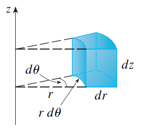
14. Integral tripla em coordenadas cilíndricas
Considere uma região cuja projeção polar possa ser descrita por
e cuja altura satisfaça
Então
Portanto, para mudar para coordenadas cilíndricas:
- substituímos \(x\) por \(r\cos\theta\);
- substituímos \(y\) por \(r\sin\theta\);
- mantemos \(z\);
- reescrevemos os limites em termos de \(r\), \(\theta\) e \(z\);
- substituímos \(dV\) por \(r\,dz\,dr\,d\theta\).
15. Coordenadas esféricas
Nas coordenadas esféricas, um ponto \(P\) é representado por
em que \(\rho\) é a distância da origem ao ponto, \(\theta\) é o mesmo ângulo utilizado nas coordenadas cilíndricas e \(\phi\) é o ângulo entre o eixo \(z\) positivo e o segmento que liga a origem ao ponto.
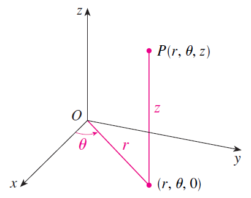
16. Superfícies coordenadas esféricas
Algumas superfícies importantes assumem descrições particularmente simples:
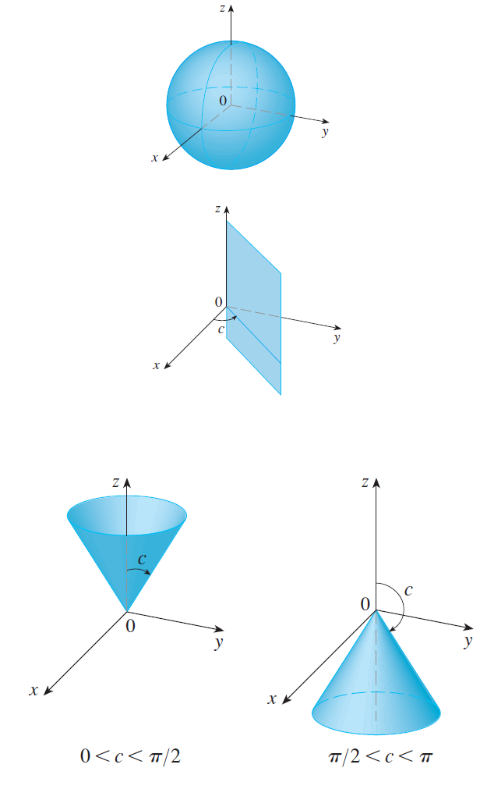
17. Relação entre coordenadas esféricas e cartesianas
Da geometria da transformação,
e
Como \(x=r\cos\theta\) e \(y=r\sin\theta\), segue que
Além disso,
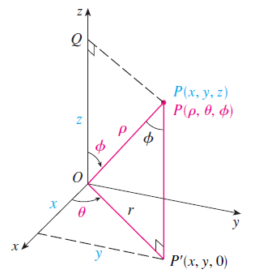
18. Elemento de volume em coordenadas esféricas
Uma pequena cunha esférica possui dimensões aproximadamente iguais a
Assim,
Portanto,
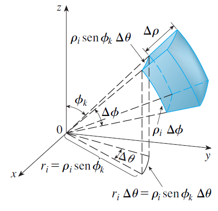
19. Integral tripla em coordenadas esféricas
Para uma cunha esférica
a fórmula de integração é
Em regiões mais gerais, o limite radial pode depender dos ângulos:
20. Mudança de variáveis
A ideia de coordenadas polares, cilíndricas e esféricas faz parte de um princípio mais geral: podemos substituir as variáveis originais por novas variáveis que descrevam a geometria de modo mais conveniente.
Em duas dimensões, considere uma transformação
A transformação leva uma região \(S\) no plano \(uv\) a uma região \(R\) no plano \(xy\).
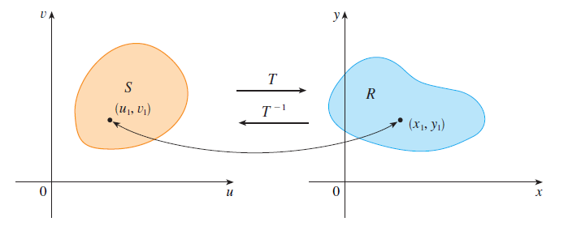
21. O Jacobiano
Um pequeno retângulo no plano \(uv\), com dimensões \(\Delta u\) e \(\Delta v\), é transformado aproximadamente em um paralelogramo no plano \(xy\). A área desse paralelogramo depende de como a transformação deforma localmente a região.
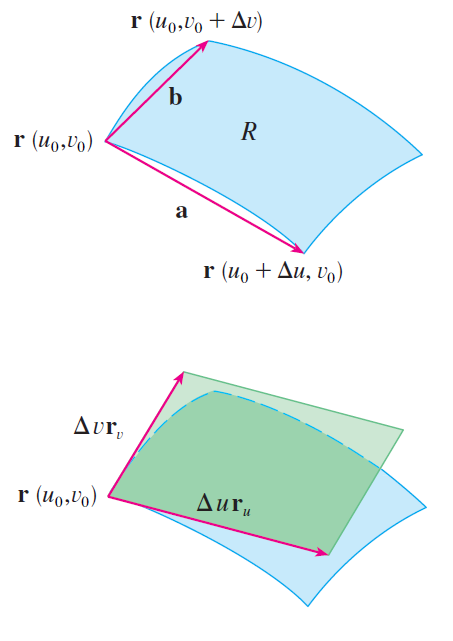
O fator de escala local é determinado pelo Jacobiano.
Equivalentemente,
O elemento de área transforma-se segundo
O valor absoluto é necessário porque área é não negativa.
22. Coordenadas polares como exemplo de Jacobiano
Para
temos
Logo,
recuperando exatamente o fator utilizado nas integrais polares.
23. Estratégia para escolher o sistema de coordenadas
- Cartesianas: regiões limitadas naturalmente por planos ou superfícies que podem ser isoladas como funções de duas variáveis.
- Cilíndricas: simetria em torno de um eixo, especialmente o eixo \(z\), e presença frequente de \(x^2+y^2\).
- Esféricas: simetria em torno de um ponto, esferas, cones e presença de \(x^2+y^2+z^2\).
- Mudança geral: quando uma transformação apropriada simplifica simultaneamente a região e o integrando.
24. Erros frequentes
- Montar os limites sem identificar a projeção. Faça primeiro um esboço do sólido e de sua projeção.
- Interpretar os limites independentemente. Os limites internos geralmente dependem das variáveis externas.
- Esquecer o fator \(r\) em coordenadas cilíndricas. O elemento correto é \(dV=r\,dz\,dr\,d\theta\), na ordem apresentada.
- Esquecer \(\rho^2\sin\phi\) em coordenadas esféricas. Esse fator faz parte do elemento de volume.
- Confundir \(\theta\) e \(\phi\). Use a convenção adotada nas aulas antes de estabelecer os limites.
- Transformar apenas o integrando. Uma mudança de variáveis exige transformar também a região e o elemento de volume ou área.
- Ignorar o valor absoluto do Jacobiano. O fator que multiplica o elemento de área deve representar uma escala geométrica não negativa.
Use o ambiente 3D para representar sólidos, suas projeções nos planos coordenados, cilindros, cones e esferas. A visualização geométrica é particularmente útil para determinar corretamente os limites de uma integral tripla.
STEWART, J. Cálculo. Volume 2. São Paulo: Cengage Learning, 2013.